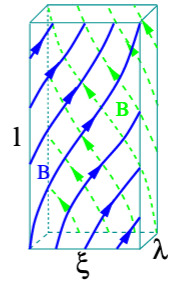
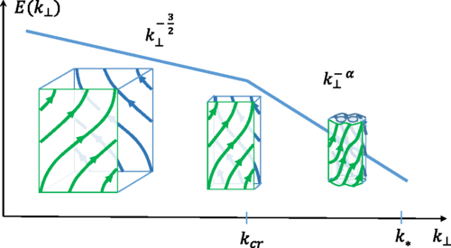
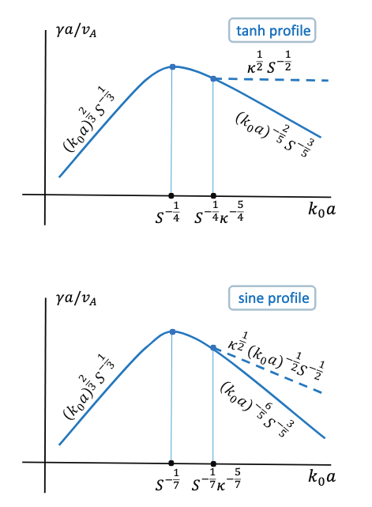

Role of Magnetic Reconnection (Tearing Instability) in Magnetohydrodynamic Turbulence
(boldyrevTearingInstabilityAlfven2020?) (loureiroRoleMagneticReconnection2017?) (loureiroCollisionlessReconnectionMagnetohydrodynamic2017?) (malletDisruptionAlfvenicTurbulence2017?) Mallet, Schekochihin, and Chandran (2017) (boldyrevMagnetohydrodynamicTurbulenceMediated2017?) (boldyrevSpectrumMagnetohydrodynamicTurbulence2006?)
This analysis predicts the existence of the subinertial, reconnection interval of MHD turbulence, with the estimated scaling of the Fourier energy spectrum E(k_{⊥})∝k-5/2, where k is the wave number perpendicular to the local mean magnetic field.
Key questions: How does magnetic reconnection influence turbulence? What role do tearing instabilities play?
Recent studies suggest that reconnection via tearing plays a crucial role in mediating the turbulent energy cascade.
Theoretical Foundations in MHD Turbulence
Incompressible MHD Equations & Turbulence:
\[ \begin{aligned} &\partial_t \mathbf{v}+(\mathbf{v} \cdot \nabla) \mathbf{v}=-\nabla p+(\nabla \times B) \times \mathbf{B}+v \nabla^2 \mathbf{v}\\ &\partial_t \mathbf{B}=\nabla \times(\mathbf{v} \times \mathbf{B})+\eta \nabla^2 \mathbf{B} \end{aligned} \]
Conservation laws in decaying MHD turbulence
\[ \begin{aligned} &E=\frac{1}{2} \int\left(v^2+B^2\right) d^3 x\\ &H^C=\int(\mathbf{v} \cdot \mathbf{B}) d^3 x\\ &H^M=\int(\mathbf{A} \cdot \mathbf{B}) d^3 x \end{aligned} \]
- Magnetic helicity is better conserved than the energy => large-scale helical magnetic structures
- Cross-helicity may dissipate slower than the energ => dynamically aligned structures
Anisotropic Turbulence Models
- Irosnikov & Kraichnan (1963, 1965) \(\tau_{IK}(λ) \sim N λ / V_A \sim λ / \delta v_λ\left(V_A / \delta v_λ\right)\) (kraichnanInertialrangeSpectrumHydromagnetic1965?)
\[ E_{IK}(k)=\left\langle | \delta \mathbf{v}(k)|^2\right\rangle k^2 \propto k^{-3 / 2} \]
MHD turbulence the energy transfer occurs predominantly in the field-perpendicular direction.
- Goldreich & Sridhar (1995, 1997): Introduced anisotropic cascade ideas and scaling predictions for strong Alfvénic turbulence. (goldreichTheoryInterstellarTurbulence1995?)
\[ E_{GS}(k_{\perp}) = \left\langle | \delta \mathbf{v}(k_{\perp})|^2\right\rangle k_{\perp} \propto k_{\perp}^{-5 / 3} \]
- Boldyrev (2006): Modifications, incorporating dynamic alignment effects. Eddies are also anisotropic in the plane perpendicular to the local magnetic field. (boldyrevSpectrumMagnetohydrodynamicTurbulence2006?)
Eddy scales

\[ \begin{aligned} \xi & \sim L(\lambda / L)^{3 / 4}, \\ \ell & \sim L(\lambda / L)^{1 / 2}, \\ b_\lambda & \sim B_0(\lambda / L)^{1 / 4}, \\ v_\lambda & \sim V_0(\lambda / L)^{1 / 4}, \\ \tau & \sim \ell / V_{A, 0} \sim \lambda^{1 / 2} L^{1 / 2} / V_{A, 0}, \\ V_{A, \lambda} & \sim V_{A, 0}(\lambda / L)^{1 / 4}, \end{aligned} \]
Aspect ratio of an eddy in the perpendicular direction increases as \(λ → 0\).
\[ ξ/λ ∼ (L/λ)^{1/4} \]
In the perpendicular plane, eddies become ever more elongated current sheets as λ gets smaller.
Turbulent motions generate sheared magnetic structures where magnetic reconnection sets in, which, in turn, modifies turbulent fluctuations at the corresponding scales. A particularly interesting feature of 3D anisotropic eddies is that they can be thought of as current sheets of thickness λ and length ξ in the field-perpendicular plane (with ξ ≫ λ)… The anisotropic, current-sheet-like eddies become the sites of magnetic reconnection before the formal Kolmogorov dissipation scale is reached.
At what scale (i.e., aspect ratio) does reconnection of these current sheets (eddies) become an important effect?
What would be the rate of a linear tearing instability triggered by its magnetic profile?
Tearing instability
Critical scale \(\lambda_{cr}\) at which the growth rate \(γ\) of that mode matches the eddy turn over time at that scale.
Two well-known regimes:
- FKR (small tearing mode instability parameter, \(\Delta^{\prime}\) )
- Coppi (large \(\Delta^{\prime}\) )
The \(N=1\) mode, related to the tearing perturbation wavenumber through \(k / 2 \pi=N / \xi\), is the most unstable mode until it transitions into the Coppi regime. This happens at the scale that satisfies
\[ (\xi / \lambda) S_\lambda^{-1 / 4} \sim 1 \]
yielding the transition scale for the \(N=1\) mode
\[ \lambda_{t r, 1} / L \sim S_L^{-4/9} \]
In other words, if \(\lambda>\lambda_{t r, 1}\), the most unstable mode in the current sheet is an FKR mode; if the opposite is true,
Tearing instability (FKR regime)
For the \(N=1\) mode, the growth rate is
\[ γ_1^{\mathrm{FKR}} \sim \xi^{2 / 5} V_{A, \lambda}^{2 / 5} \lambda^{-2} \eta^{3 / 5} \]
The equation \(γ_1^{\mathrm{FKR}} \tau \sim 1\) therefore yields
\[ \lambda_{c r, 1} / L \sim S_L^{-6 / 11} \]
We see that \(\lambda_{c r, 1}<\lambda_{t r, 1}\), implying that the modes that will become critical are not FKR modes, but rather Coppi modes.
Tearing instability (Coppi regime)
The largest growth rate is
\[ γ_{\max }^{\mathrm{Coppi}} \sim \tau_{A, \lambda}^{-1} S_\lambda^{-1 / 2} \]
where \(\tau_{A, \lambda} \equiv \lambda / V_{A, \lambda}\), corresponding to a mode number \(N_{\text {max }}^{\text {Coppi }} \sim \xi / \lambda S_\lambda^{-1 / 4}\).
The criticality condition now yields
\[ \lambda_{c r}^{\mathrm{Coppi}} / L \sim S_L^{-4 / 7} \]
As the scale \(\lambda\) decreases, the rate of the corresponding tearing instability increases faster than the eddy turnover rate.
Upper limit of critical current sheets (dissipation)
We first note that we expect such plasmoids of many different sizes to be separated from each other by Sweet-Parker current sheets of a length, \(L_c\), such that their aspect ratio is marginally stable to plasmoid formation, \(\sim S_c^{1 / 2}[49]\), where \(S_c=L_c V_{A, \lambda_{c r}^{\text {Coppi }}} / \eta\) is the critical Lundquist number, \(S_c \sim 10^4\).
Current sheets longer than \(L_c\) are unstable to plasmoid formation; if, on the other hand, they are shorter than \(L_c\), they will be stretched to that length by differential background flows.
The thickness of these critical current sheets is estimated as:
\[ \delta_c \sim L_c S_c^{-1 / 2} \sim \lambda_{c r}^{\mathrm{Coppi}} S_{\lambda_{c r}^{\mathrm{Coppi}}}^{-1} S_c^{1 / 2} \]
where \(S_{\lambda_{c r}^{\mathrm{Coppi}}}=\lambda_{c r}^{\mathrm{Coppi}} V_{A, \lambda_{c r}^{\mathrm{Coppi}}} / \eta\). We thus obtain
\[ \delta_c / L \sim S_c^{1 / 2} S_L^{-6 / 7} \]
Spectrum of turbulence below the reconnection scale

These critical current sheets are the structures where ohmic and viscous dissipation is happening. It is reasonable to assume that Eq. (18) sets the dissipation scale, that is, the scale below which the reconnection interval is ultimately terminated by the dissipation. Assuming that the energy spectrum in this interval follows a power law, we write it in the form
\[ E\left(k_{\perp}\right) \propto k_0^{-3 / 2}\left(k_{\perp} / k_0\right)^{-\alpha} \]
\[ -\frac{d E}{d t}=\eta \int^{k_*} k_{\perp}^2 E\left(k_{\perp}\right) d k_{\perp} \propto S_L^{\frac{4}{7}\left(-\frac{3}{2}+\alpha\right)+\frac{6}{7}(3-\alpha)-1} \]
This defines the scaling of the energy spectrum: \(\alpha=5/2\).
Spectrum of turbulence governed by the tearing instability
(boldyrevCalculationsTheoryTearing2018?) considered the general case of an arbitrary tearing parameter, and found these parameters depend on the assumed magnetic shear profile, and they are not universal.
Replacing the nonlinear turnover time by the tearing time \(b_a^2 γ=\varepsilon\)
\[ b_a \sim \varepsilon^{2 / 5} \eta^{-1 / 5} a^{3 / 5} \]
and to the energy spectrum
\[ E_{\mathrm{tanh}}\left(k_{\perp}\right) \propto k_{\perp}^{-11 / 5} \]
A similar estimate for the sine-shaped profile leads to somewhat different scaling exponent
\[ b_a \sim \varepsilon^{7 / 18} \eta^{-1 / 6} a^{5 / 9} \]
and
\[ E_{\mathrm{sin}}\left(k_{\perp}\right) \propto k_{\perp}^{-19 / 9} \]

Reconnection with multiple timescales
(malletDisruptionAlfvenicTurbulence2017?) Mallet, Schekochihin, and Chandran (2017)
Tearing instability is the initial nonlinear stage of magnetic reconnection, while the term “reconnection” is often used to describe a broader range of associated fully nonlinear phenomena, such as the X-point collapse and formation of plasmoid chains.
First, there is exponential growth of the linear tearing mode until the width of the island(s) is approximately the width of the inner layer where resistivity is important, w ∼ δin ∼ [γ (kδz)−2λ2η]1/4 , (16) where γ is the linear growth rate of the tearing mode and k ∼ N/ξ is its wavenumber (N is the number of islands).
Secondly, there may be secular “Rutherford’ growth of the islands until w ∼ 1/ ′, where ′ is the instability parameter for the tearing mode.
\[ \tau_{\text {Ruth }} \sim \frac{1}{\eta \Delta^{\prime 2}} \sim N^2\left(\frac{\hat{\lambda}}{\hat{\xi}}\right)^2 S_\lambda \frac{\lambda}{\delta z} . \]
Note that \(\tau_{\text {Ruth }}\) increases with \(N\), so if the maximum growth rate is attained for the \(N=1\) FKR mode, this mode will also exit the Rutherford stage and saturate first. In the FKR limit, \(\Delta^{\prime} \delta_{\text {in }} \ll 1\), and so there is a well-defined Rutherford stage. For the Coppi modes, \(\Delta^{\prime} \delta_{\text {in }} \sim 1\), and so there is no Rutherford stage.
- Thirdly, the X-point(s) that have arisen collapse into thin sheets, which then undergo fast reconnection, leaving behind a set of magnetic islands.
\[ \tau_{\mathrm{D}} \sim \begin{cases}\max \left[1 / \gamma_{\mathrm{FKR}}, \tau_{\mathrm{Ruth}}\right] & \text { if } \hat{\lambda}>\hat{\lambda}_{\mathrm{tr}}, \\ 1 / \gamma_{\max } & \text { if } \hat{\lambda} \leq \hat{\lambda}_{\mathrm{tr}}\end{cases} \]